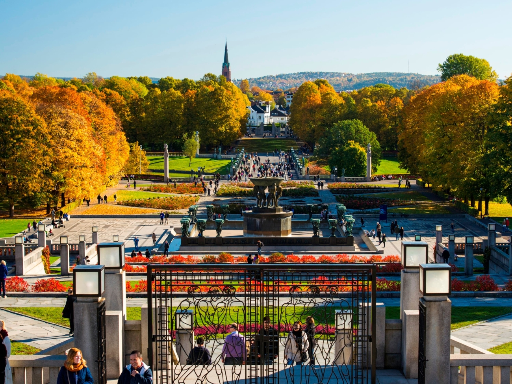

Autumn
Осінь
An under-appreciated season in Scandinavia, autumn will charm you with crisp, clean air and colourful leaves. Knowing that winter will descend soon, Scandinavians enjoy the season to the fullest, particularly all the delicious seasonal foods that emerge at this time, such as crab in Norway and apples in Denmark. Though it’s usually quite chilly by late October, September can often have a late-summer vibe that’s made all the better by being bathed in golden autumn light.However, there is a little-known secret to autumn in Scandinavia; it's actually one of the best times to spot the Northern Lights. It's perfect for those looking to avoid those winter chills, while enjoying the brilliance of autumn's colours and that oh-so Scandinavian of activities – foraging.
Недооцінений сезон у Скандинавії, осінь зачарує вас хрустким, чистим повітрям та барвистим листям. Знаючи, що скоро настане зима, скандинави насолоджуються сезоном в повній мірі, особливо всі смачні сезонні страви, що з’являються в цей час, такі як краби в Норвегії та яблука в Данії. Хоча в кінці жовтня зазвичай досить холодно, у вересні часто може бути вібро пізнього літа, яке покращується, купаючись у золотому осінньому світлі. Однак, осінь у Скандинавії є маловідомою таємницею; це насправді один з найкращих часів, щоб помітити Північне сяйво. Це ідеально підходить для тих, хто хоче уникнути цих зимових ознобів, насолоджуючись блиском осінніх кольорів та ого-скандинавських видів діяльності - прикорму.
Best Places to Visit
Найкращі місця для відвідування

Oslo
Oslo
Norway
Norway
Oslo, the capital of Norway, sits on the country’s southern coast at the head of the Oslofjord. It’s known for its green spaces and museums. Many of these are on the Bygdøy Peninsula, including the waterside Norwegian Maritime Museum and the Viking Ship Museum, with Viking ships.
Осло, столиця Норвегії, сидить на південному узбережжі країни на чолі Ослофьорда. Він відомий своїми зеленими насадженнями та музеями. Багато з них знаходяться на півострові Бигдей, включаючи приморський музей Норвегії та музей кораблів вікінгів.
Aurland
Aurland
Norway
Norway
Aurland is a municipality in the county of Vestland, Norway. It is located on the south side of the Sognefjorden in the traditional district of Sogn. The administrative center is the village of Aurlandsvangen. Other villages include Bakka, Flåm, Undredal, and Gudvangen.
Aurland - муніципалітет у графстві Вестланд, Норвегія. Він розташований на південній стороні Согнефьордена в традиційному районі Согн. Адміністративний центр - село Аурландсванген. Інші села включають Бакку, Флем, Утол і Гудванген.
Sognefjord
Sognefjord
Norway
Norway
The Sognefjord or Sognefjorden, nicknamed the King of the Fjords, is the largest and deepest fjord in Norway. Located in Vestland county in Western Norway, it stretches 205 kilometres inland from the ocean to the small village of Skjolden in the municipality of Luster.
Согнефьорд або Согнефьорден, прозваний королем фіордів, є найбільшим і найглибшим фіордом у Норвегії. Розташований у повіті Вестленд на Західній Норвегії, він простягається на 205 кілометрів у внутрішній частині від океану до селища.
Read More